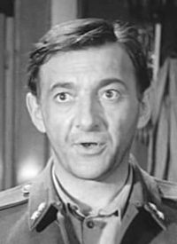

Rendező
 |
| Keleti Márton |
Főszereplők
|  |
 |
|
| Sinkovits Imre |
Darvas Iván |
Major Tamás |
Cselekmény
A második világháború utolsó heteiben Molnár tizedes a zászlóalja kézigránátokba rejtett és ellopott zsoldjával a maga részéről befejezettnek nyilvánítja a háborút. Hamis nyílt paranccsal, a helyzethez mindig alkalmazkodó ügyes hozzáállásával, motorkerékpáron próbál meg a folyamatosan változó frontvonalakon átszökni.
Több igazoltatást is megúszva végül egy Albert nevű inasra bízott kastélyban talál menedéket, amely azonban nem üres, már három szökött magyar katona is ott bujkál. Mint négyük közül a legélelmesebb és legdörzsöltebb, Molnár átveszi a parancsnokságot, kiosztja a feladatokat mindenkinek, a különféle lehetőségeket számba véve. Ha kell, katonai parancsnokságnak álcázzák magukat, szükség esetén a rendszerhez hű honvédek és színleg együttműködnek a nyilasokkal, ha kell szökött munkaszolgálatost fogadnak maguk közé, vagy sebesült szovjet katonát mentenek meg.
Bár csak a háború túlélése a céljuk, hiába kerülik a nyilasokat, németeket, szovjeteket, állandóan veszélyes kalandokba, bámulatos helyzetekbe keverednek. Végül egy Barokányi nevű, büntetőosztagot vezető nyilas főhadnagy leleplezi őket, hamarosan az egész társaság a kivégzőosztag előtt találja magát. Kivégzés előtti megszégyenítés végett Szijjártónak kell a pénzzel teli gránátokat egyesével átadni, melyeket a dagi Dunyhás testvér szed szét. A megmenekülés esélye szinte nulla, ám a pénzzel teli gránátok között van egy igazi is...
Alig menekülnek meg a kivégzőosztag elől, máris szovjet fogolytáborban találják magukat. A kommunista Szijjártó minden befolyását latba vetve eléri, hogy a társaságról elhiggyék, a fasiszták ellen harcoló partizánok voltak a háború alatt. A szabadon bocsátásnak azonban feltétele, egy nehéz és veszélyes partizánakció végrehajtása. Molnár tizedes ismét úgy dönt, elege van a háborúból, úgy véli, a német golyó sem üt szebb lyukat az orosznál, és nem vállalja az akciót. Utolsó pillanatban azonban mégis csatlakozik társaihoz.
https://hu.wikipedia.org/wiki/A_tizedes_meg_a_többiek
Kritika
A tizedes meg a többiek kultuszfilmmé válásának, s a Sinkovits figura mitizálódásának érdemes megvizsgálni a történelmi, társadalomlélektani, s persze művészi összetevőit.
A film karrierjéhez hozzájárult, hogy fejhosszal kimagaslott a korszak magyar filmvígjáték kínálatából, s az is, hogy az ideológia kevésbé itatta, színezte át a cselekményt, kevésbé határolta be a szereplők mozgásterét. Az ideológia persze jelen volt, de az átlagnál kisebb dózisban: a meglehetősen ellenszenves kommunista, Szíjjártó alakjában, magatartásában, kinyilatkoztatásaiban, s a film didaktikus befejezésében.
A film deheroizáló szemléletével újdonságot jelentett. A második világháborúról, az ellenállásról szóló filmekben eleinte sematikusan, de 1956 után is a szereplőket jó ideig még többnyire szoborszerű pózba merevítve, meglehetősen patetikusan és a történelemkönyvek, hivatalos párttörténetek szellemében idézték fel az eseményeket. A tizedes meg a többiek megtört egy – vagy több – tabut: a magyar történelem vérzivataros, drámai időszakáról játékosan, könnyeden beszélt, s a főszereplő nem pozitív, vagy legalábbis nem egyértelműen pozitív figura volt. (Persze, a nézők szemében Sinkovits tizedese annak, sőt hősnek számított.)
[...]
A tizedes meg a többiek – mondhatnánk szinte akaratán kívül – ironikusan, szellemesen beletalált a magyarság egyik legalapvetőbb traumájába, problémájába. Abba, hogy az ország földrajzi helyzetéből, kicsinységéből, nyelve elszigeteltségéből, gazdasági, politikai helyzetéből adódóan a századok során szinte mindig ki volt szolgáltatva az idegen hatalmaknak, érdekeknek. A Tizedes cselekményének legfőbb helyszíne egy vidéki kastély tulajdonképpen az ország szimbólumaként is értelmezhető. Átjáróház. Hol németek, hol magyar katonák, hol nyilasok tartják megszállva az épületet, s diktálják a játékszabályokat. A kastélyban rejtőzködő társaság tagjai (tizedes, búsmagyar zászlós, lakáj, szökött kiskatonák, nyilas főhadnagy) társadalmi hovatartozásukat, származásukat, foglalkozásukat tekintve bizonyos fokig reprezentálják a lakosság nagy részét. Semmi mást nem szeretnének, mint megúszni, túlélni a háborút. Azt, ha őket kihagynák ebből a buliból. Nekik nincs közük ahhoz az egész vircsafthoz, ami ebben a kastélyban, s tágabban az országban folyik.
A mozinéző tehát miközben a film sztorijával, fordulataival, s a tizedes karizmatikus figurájával azonosult, azt is gondolhatta, álmodhatta a zsöllyében, hogy egyszer csak az átjáró házból mindenki kitakarodik, s az végre jogos tulajdonosaié lesz. A tizedesnek, s társainak végre nem kell rejtőzködniük e házban-hazában. (A Darvas alakította zászlós így fakad ki a kastélybeli utolsó vacsora közben, amikor sokadszorra megint konspirálni, rejtőzködni, öltözködni kell: "Átöltözünk. Mindig csak átöltözünk. Hát meddig lehet ezt bírni köpönyeggel, önérzettel?")
https://web.archive.org/web/20140821122710/http://gervaiandras.hu/koenyvekm/sinkovits/5-egy-pesti-svejk.html